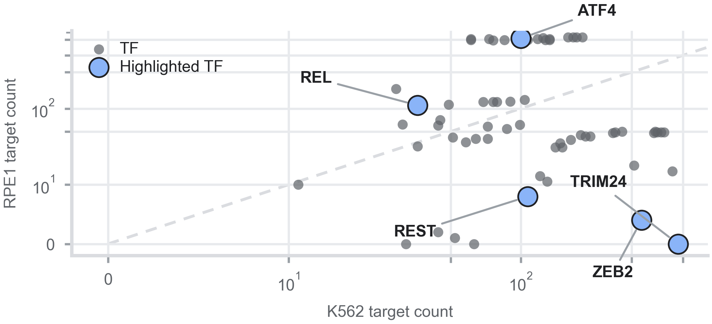

We want a scalable, learnable method for data fitting, without giving up direction, sign, or a readable mechanism.
1MotivationSilence one gene and the change does not stop there — it travels along regulatory wiring and re-settles the whole transcriptome.
2MethodsFive kinds of evidence for the same claim. Most direct wins; disagreement leaves the edge unsigned for the model to resolve.
Together they propose ~180,000 candidate edges — far more than we can fit. Which ones survive is step 3.
Group every duplicate by (source, target), then:
Most curated edges end up unsigned this way — exactly the edges the model has to learn a direction for.
Occupancy is exactly ½ when the regulator sits at its threshold — whatever K and n are.
Swap K562 for RPE1 and only these two change — that is the whole of the context specificity.
3Results
| TF | K562 | RPE1 | Context |
|---|---|---|---|
| TRIM2422 | 476 | 0 | CML |
| ATF423 | 100 | 833 | stress / retinal |
| ZEB224 | 331 | 4 | haematopoiesis |
| REST25 | 107 | 8 | neuronal / epith. |
| REL26 | 36 | 110 | NF-κB / retinal |
Same procedure, two cell lines. Context enters as evidence in the graph, not as a learned cell-line vector.
4,452 perturbations18 across K562 and RPE1 — held out for evaluation.
Keep the same GRN. Replace the Hill dynamics with linear signed propagation — a random walk with restart.
If the graph alone carried the signal, this should hold up.
| iPerturb | linear RWR | |
|---|---|---|
| Directional acc. — K562 | 0.68 | 0.53 |
| Directional acc. — RPE1 | 0.87 | 0.61 |
| Top-20 Pearson — K562 | 0.58 | 0.07 |
| Top-20 Pearson — RPE1 | 0.78 | 0.11 |
| Change-vector MSE | ≈18× / ≈10× lower | — |
Held-out subsample protocol — deliberately distinct from the full-set evaluation on the previous slide.
The curated graph is necessary. It is nowhere near sufficient.
3ResultsHappy to take questions.
Linear propagation is not a heuristic. It is exactly the steady-state linear response of a kinetic model:
— the random-walk-with-restart operator, recovered exactly.
That derivation is also its boundary: a first-order sensitivity, valid near the operating point and blind to saturation, cooperativity and signed feedback.